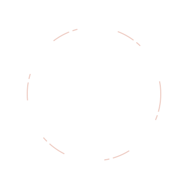
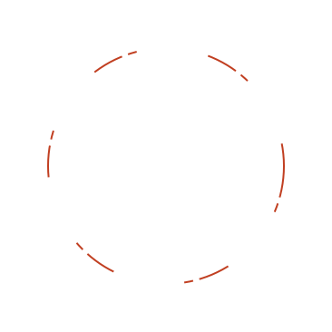
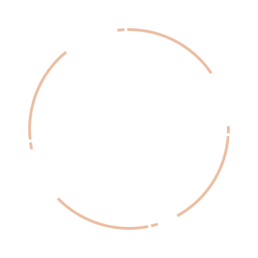
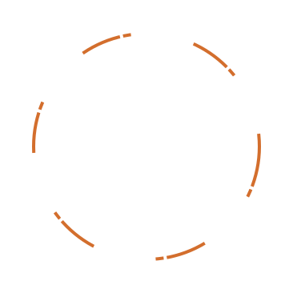
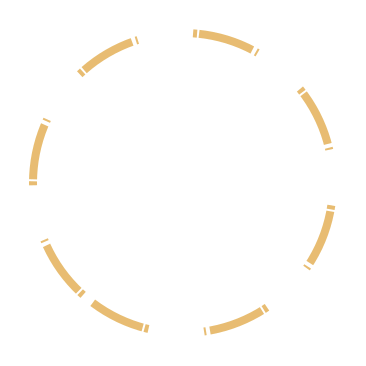
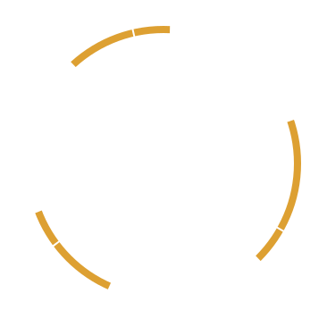
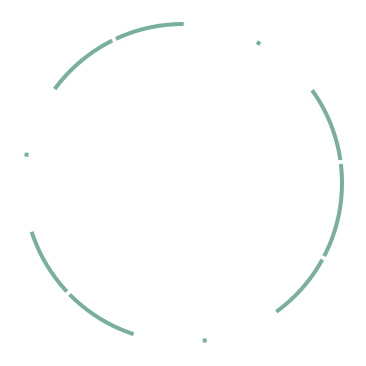
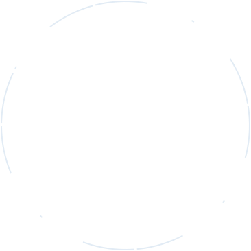
By downloading, you agree to the Terms and Conditions. Other platforms View all releases
Great things happen when developers work together—from teaching and sharing knowledge to building better software. Teletype for Atom makes collaborating on code just as easy as it is to code alone, right from your editor.
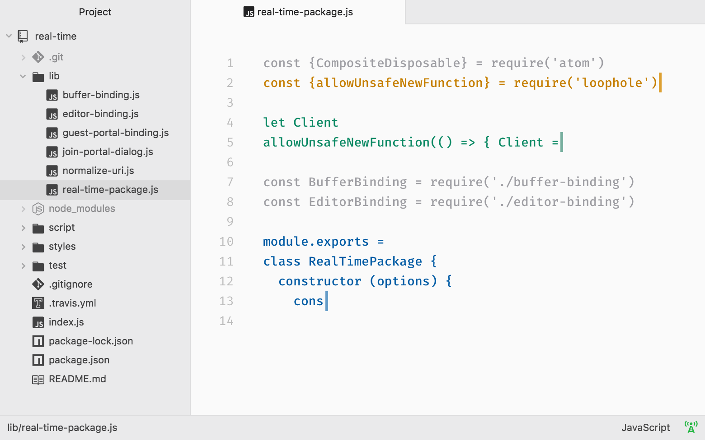
Share your workspace and edit code together in real time. To start collaborating, open Teletype in Atom and install the package.
Atom-IDE is a set of optional packages to bring IDE-like functionality to Atom and improve language integrations.
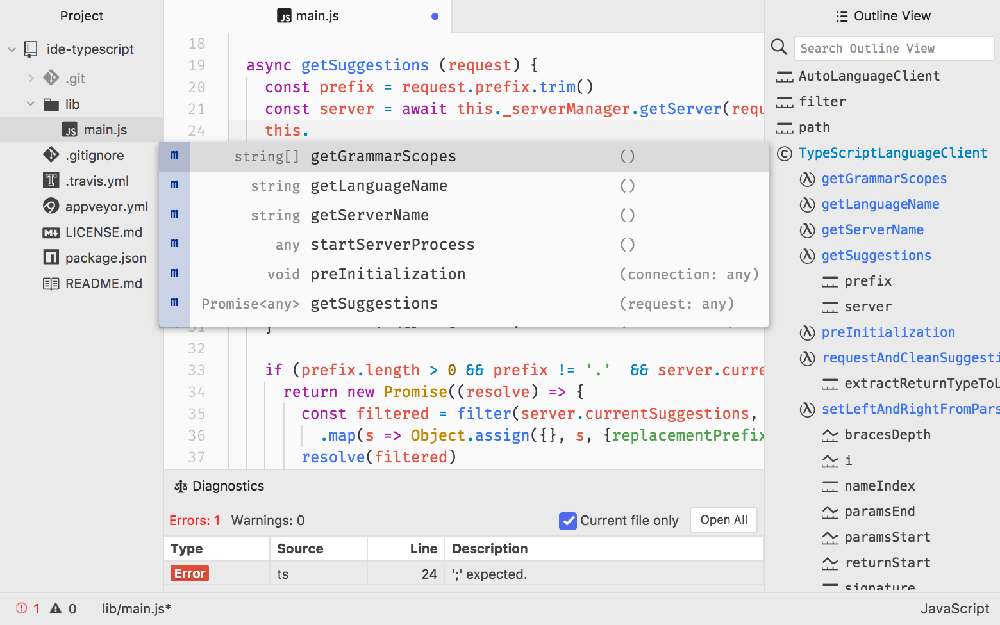
Get smarter context-aware auto-completion, code navigation features such as an outline view, go to definition and find all references. You can also hover-to-reveal information, diagnostics (errors and warnings) and document formatting. To get all these IDE features, open Atom IDE UI in Atom and install the package.
A text editor is at the core of a developer's toolbox, but it doesn't usually work alone. Work with Git and GitHub directly from Atom with the GitHub package.
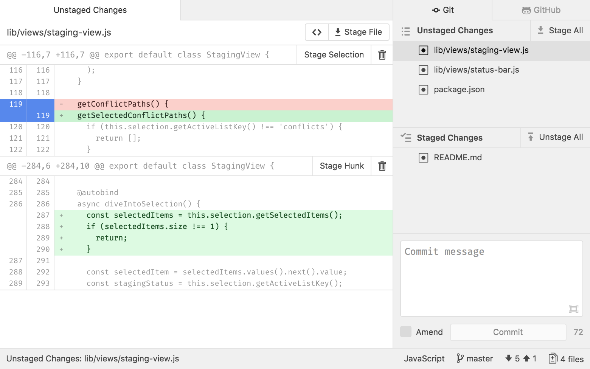
Create new branches, stage and commit, push and pull, resolve merge conflicts, view pull requests and more—all from within your editor. The GitHub package is already bundled with Atom, so you're ready to go!
Atom works across operating systems. Use it on OS X, Windows, or Linux.
Search for and install new packages or create your own right from Atom.
Atom helps you write code faster with a smart and flexible autocomplete.
Easily browse and open a single file, a whole project, or multiple projects in one window.
Split your Atom interface into multiple panes to compare and edit code across files.
Find, preview, and replace text as you type in a file or across all your projects.
Choose from thousands of open source packages that add new features and functionality to Atom, or build a package from scratch and publish it for everyone else to use.
Atom comes pre-installed with four UI and eight syntax themes in both dark and light colors. Can't find what you're looking for? Install themes created by the Atom community or create your own.
It's easy to customize and style Atom. Tweak the look and feel of your UI with CSS/Less, and add major features with HTML and JavaScript.
Atom is a desktop application built with HTML, JavaScript, CSS, and Node.js integration. It runs on Electron, a framework for building cross platform apps using web technologies.
Atom is open source. Be part of the Atom community or help improve your favorite text editor.
| GitHub | github.com/atomeditor-io |
| Discussion | Release notes |
| RSS Feed | Packages & Themes |